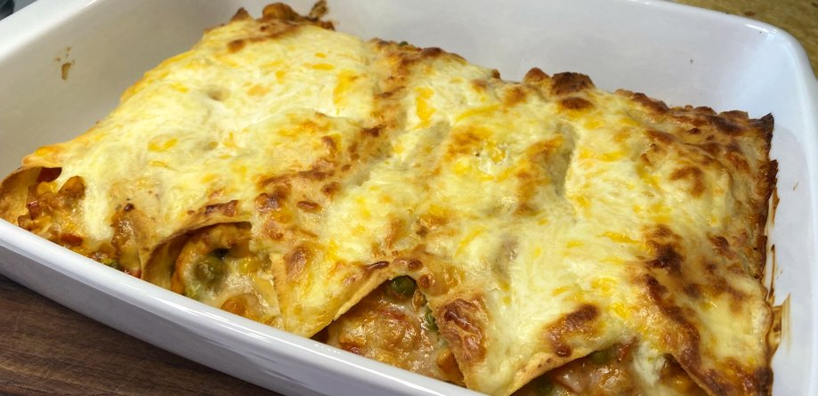

Nazaj
Zapečene tortilje s piščancem

Slastne tortilje s hitro pripravljenim nadevom iz piščančjega mesa, zelenjave, kisle smetane in sira. Uporabite lahko pšenične ali koruzne tortilje ter pripravljeno jed po želji postrežete s skledo solate. Pripravo sočnih tortilj si lahko ogledate tudi v spodnjem videu.Slastne tortilje s hitro pripravljenim nadevom iz piščančjega mesa, zelenjave, kisle smetane in sira. Uporabite lahko pšenične ali koruzne tortilje ter pripravljeno jed po želji postrežete s skledo solate. Pripravo sočnih tortilj si lahko ogledate tudi v spodnjem videu.
Sestavine za 4 osebe
- 500g piščančjih filejev
- olje po potrebi
- 1 čebula
- 2 manjši papriki
- 100g zamrznjenega graha
- 100g vložene koruze
- 200g pelatov
- 200g kisle smetane
- sol in mleti poper
- 4 manjše tortilije
- 50g naribanega čedarja
- 150g naribane mocarele
Priprava
-
Piščančje fileje narežemo na trakove. Čebulo olupimo in nasekljamo, paprike pa narežemo na manjše kocke.
- V ponvi segrejemo olje in na njem v treh minutah popražimo piščančje trakove. Ko meso spremeni barvo, ga predenemo na krožnik.
- Za praženje zelenjave uporabimo kar ponev, v kateri smo popražili meso. Če se nam zdi potrebno, prilijemo še malo olja, nato pa v ponvi v štirih minutah popražimo čebulo in papriko. Dodamo še grah, koruzo in pelate.
- V ponev vrnemo piščančje trakove in vmešamo polovico kisle smetane. Začinimo s soljo in poprom, kuhamo še dve minuti, nato pa odstavimo z ognja.
- Pečico segrejemo na 220 stopinj Celzija. Na vsako tortiljo damo del nadeva, po katerem potresemo malo čedarja in mocarele. Zavijemo in drugo poleg druge zložimo v pekač, tako da prepognjen konec gleda navzgor. Pritrdimo ga z zobotrebcem.
- Nadevane tortilje po vrhu premažemo z mešanico preostanka kisle smetane in sira. Pečemo 15 do 20 minut, da se sir s kislo smetano lepo zapeče.